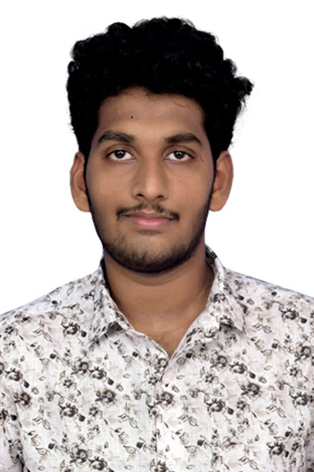

Harsha Vardhan Reddy

CAREER OBJECTIVE
To work for an organization that provides me the opportunity to improve my skills, and knowledge and with a platform to carry out my abilities for my growth along with the organization.
TECHNICAL SKILLS
- JAVA
- HTML, CSS,JAVA SCRIPT
- Good Communication Skills
EDUCATIONAL QUALIFICATION
-
BACHELOR OF TECHNOLOGY
Electrical & Electronics Engineering
SRKR ENGINEERING COLLEGE
2016 - 2020
CGPA: 7.50
-
BOARD OF INTERMEDIATE
MPC
ADITYA JUNIOR COLLEGE
2015 – 2016
CGPA: 9.4
-
BOARD OF SECONDARY EDUCATION
2013 – 2014
SASI ENGLISH MEDIUM HIGH SCHOOL
CGPA: 9.2
ACADEMIC PROJECT
DESIGN OF SOLAR CELL AND IMPLEMENTATION OF MAXIMUM POWER POINT
TRACKING ALGORITHM
WORKSHOP
- Actively participated in two days workshop on IoT at Utkraanthi ( National Level Championship) held in association with Technozion-2018 at NIT -Warangal.
- Completed Java Certification course.
- Actively participated in IoT two days workshop in “EMBEDDED SYSTEMS” by AP innovation
society conducted at SRKR I Hub
- Completed MOOCS course on “Electrical Vehicles”.
SOFT SKILLS
- Quick Learner
- Positive Attitude
- Adaptivity
- Good Problem Solving Skills
PERSONAL DETAILS
CONTACT DETAILS